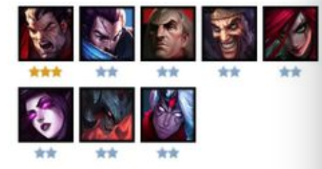

<p><a href="../index.html" name="tj_trnews" class="mnav">返回</a></p>
<p></p>
<p><span style="color: rgb(79, 129, 189);"><strong>前期：</strong></span></p>
<p>开局拿剑姬打工，诺手必拿，也可拿铁凯中期拿双子。</p>
<p><span style="color: rgb(79, 129, 189);"><strong>装备：</strong></span></p>
<p>装备必须给德莱文，且必须有攻速。先火炮</p>
<p>实在没有攻速，出一个机壳的先驱，</p>
<p><span style="color: rgb(79, 129, 189);"><strong>中期：</strong></span></p>
<p>中期囤钱吃利息升人口。</p>
<p><span style="color: rgb(79, 129, 189);"><strong>灵活：</strong></span></p>
恶魔流或者暗影流（需要更多人口）都可以，看发牌员。	
